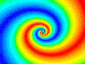

"Chaos Auf Ebene" (movie) by Rainer Wonisch.
"Pyramid" by Jim Swift. More ...
"Chaosmund" (movie) by Rainer Wonisch.
"Kleeblatt" (movie) by Rainer Wonisch.
"Magic Carpet" (movie) by Rainer Wonisch.

"Moving Petal" (movie) by Katherine Brandl.
| DPGraph Math Art Gallery Page 10 |
| Home | Buy | Free Viewer | Legacy Site Licensees Latest news: 12 Nov 2017 | Update to newest version: 19 Dec 2016 Math Art Gallery | Documentation | Links | Privacy | Contact |
More pages of beautiful math art thumbnails:
Newest
13
12
11
10
9
8
7
6
5
4
3
2
Oldest
DPG files: Alphabetically by contributor | Alphabetically by title of graph
"Chaos Auf Ebene" (movie) by Rainer Wonisch. |
"Pyramid" by Jim Swift. More ... |
"Chaosmund" (movie) by Rainer Wonisch. |
"Kleeblatt" (movie) by Rainer Wonisch. |
"Magic Carpet" (movie) by Rainer Wonisch. |
"Moving Petal" (movie) by Katherine Brandl. |
"Drumhead J02" (movie) by Jim Swift. The second radial mode of a drumhead. More ... |
 "Visual Derivatives, Part 1" by Tom Tredon. Calculus teachers: click on Edit in DPGraph for an explanation. |
 This sphere is an example of using a time-dependent expression to color a surface. |
"Springendes Schachbrett" (movie) by Rainer Wonisch. |
"Talking Head" by Hassan Sedaghat. Click on Edit in DPGraph for more info on how the parameters affect the speed. |
"Canary" (movie) by Travis Casper. The actual graph flys much faster than this slowed down sequence, and it breathes, too. |
"Velocity Field for a Stream" by Tom Tredon. Use DPGraph's Scrollbar to vary A (one river bank), B (the other river bank), or C (the speed of the stream). Click on Edit in DPGraph for more info. |
"Velocity Field for Fluid Flow Thru a Tube" by Tom Tredon. Use DPGraph's Scrollbar to vary A (the curvature), B (the inner diameter), or C (the speed of the fluid flow). Inspired by a drawing on page 3 of Harry Schey's "Div, Grad, Curl, and All That", 2nd edition. Click on Edit in DPGraph for more info. |
 "Twilight Zone" (movie) by Jim Swift. Click on Edit in DPGraph for more info, and use the Scrollbar to vary A, B, and C. More ... |
 "Sea Shell" by Hassan Sedaghat, colorized by David Parker. The surface is colored by theta in spherical coordinates. |
"Petals" by Katherine Brandl. The symplectic leaves associated with a Poisson bracket, used to describe the primitive spectra of certain algebras. |
"Visual Derivatives, Part 2" by Tom Tredon. Calculus teachers: click on Edit in DPGraph for an explanation. |